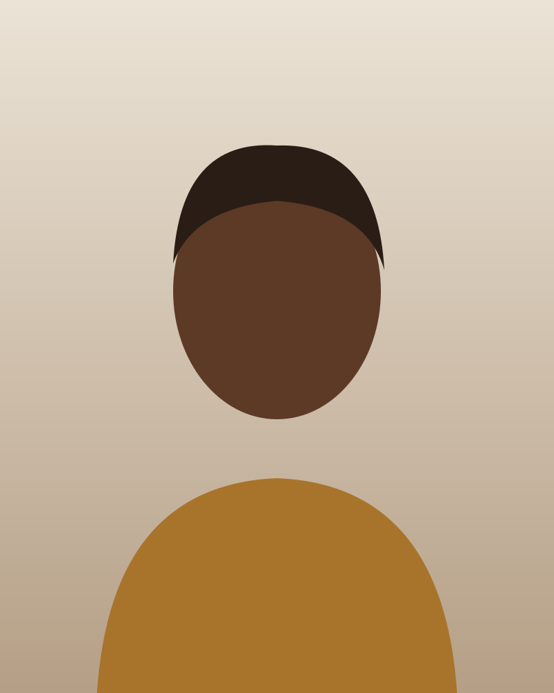

The full-screen viewer that opens from any shot grid thumbnail. It shows one photo at full size with its caption, steps through the set with Previous and Next, wrapping at either end, and closes back to the thumbnail that opened it.
Use the lightbox to look closely at review photos: a studio's gallery "From a real shoot" (L2-010), its standard test shots, and a spot's sample shots (L2-016). It is the only full-screen overlay on the public site. It is a modal dialog: the page behind is inert, focus stays inside, and Escape closes it (L2-067.3).
.viewer is the generic full-screen shell: a bar with the count and Close, a stage with an arrow on each side, and a caption.
.lightbox adds the ShotThere photo frame (rectangular photos, never cropped), the alt-text fallback and the phone pager.
Do not use it for one-off images (the hero photo is not openable), for the episode video (the episode poster plays in place), or for anything with form fields. Confirmations go in a dialog.
The examples below are live viewers inside a frame. They leave out aria-modal and autofocus and use a smaller heading level so this documentation page stays readable. The Code section shows the real attributes. Photos are capped in height to fit the frame.
Full-length fashion frame on the cyc, warm afternoon light from the left.
123456
Count.viewer__count: "Photo 3 of 8", muted label type, a polite live region so paging is announced.
Close44 px icon button with a hairline edge, aria-label="Close". Focus starts here.
PreviousIcon button, "Previous photo". From 768 px it sits beside the photo; on phones it moves into the pager.
Frame and photo.lightbox__frame: centres the full image at its own ratio (object-fit: contain) with 12 px corners. It is never cropped.
NextIcon button, "Next photo". It wraps from the last photo to the first.
Caption.viewer__caption: centred under the photo. The alt text for gallery photos, or focal length and note for sample shots. It is the dialog's description.
Pager (phones).lightbox__pager: labelled Previous and Next buttons under the caption, below 768 px only.
One viewer with two kinds of caption. The caption says what the visitor needs in order to use the photo.
Gallery photo
Photo viewer: The Junction Loft
Photo 3 of 8
Full-length fashion frame on the cyc, warm afternoon light from the left.
The Junction Loft gallery, photo 3 of 8 (dialogs/lightbox/default). The caption is the photo's alt text.
Sample shot
Photo viewer: Evergreen Brick Works
Photo 1 of 5
85 mm · Shoot north from the lower steps
Evergreen Brick Works, sample 1 of 5 (dialogs/lightbox/sample-shot). Same viewer, but the caption carries the focal length and position note (L2-016.2). The landscape frame shows uncropped.
There is one size: the viewer always covers the viewport (position: fixed; inset: 0). The photo scales to fit the width and up to the viewport height minus 13rem for the bar and caption, at its own aspect ratio.
Close and the arrows are icon buttons. Inside .viewer they get a 1 px --color-border-default edge so they read as controls on a bare canvas; the matrix sits in a .viewer, held in the page flow for this documentation, to show it. The phone pager uses secondary buttons.
Control
Default
Hover
Focus
Active
Disabled
Close
Never. Close always works.
Previous / Next arrow
Never. Navigation wraps (L2-010.3).
Pager button (phones)
Never. Navigation wraps.
Position: first, middle, last
The count changes and the arrows do not. Next on the last photo shows photo 1, and Previous on photo 1 shows the last (L2-010.3), so neither end ever disables an arrow. The middle position is the gallery example above.
Photo viewer: The Junction Loft
Photo 1 of 8
Portrait in window light, subject turned three-quarters toward the north windows.
First: Previous goes to photo 8.
Photo viewer: The Junction Loft
Photo 8 of 8

Wide frame of the whole space showing the cyc, the windows and the light stands.
Last: Next is still enabled and goes to photo 1 (dialogs/lightbox/last).
Image failed
If the full-size image returns an error, the frame keeps a 4:5 slot and shows the alt text with an image-off icon (L2-086.1). The count, caption, Close and both arrows keep working, so the visitor can move on.
Photo viewer: The Junction Loft
Photo 3 of 8
Full-length fashion frame on the cyc, warm afternoon light from the left.
Full-length fashion frame on the cyc, warm afternoon light from the left.
dialogs/lightbox/image-failed. The fallback is 22rem wide on a page; it is narrowed here to fit the frame.
Both themes
Photo viewer: The Junction Loft
Photo 5 of 8
Seated portrait on the studio sofa, window light only.
Photo viewer: The Junction Loft
Photo 5 of 8
Seated portrait on the studio sofa, window light only.
Below 768 px (XS, SM): the stage becomes one column and the side arrows are hidden, so the photo gets the full width less 8 px padding. Previous and Next move into .lightbox__pager under the caption as labelled 44 px buttons.
From 768 px (48rem): arrows sit either side of the photo with 32 px gaps and the page margin, and the pager is hidden.
The photo is never wider than the stage and never taller than the viewport minus 13rem, so the count, Close and caption are always on screen. Use 100dvh so mobile browser chrome cannot push the caption off.
Safe areas: the bar adds env(safe-area-inset-top) and the caption adds env(safe-area-inset-bottom). On phones the pager comes after the caption, so below 48rem the bottom inset moves from the caption to .lightbox__pager and the pager clears the home indicator.
Long captions wrap and stay centred. The viewer never scrolls sideways.
The viewer is the page canvas, not a dark scrim. It uses --color-bg-canvas with --color-fg-default for the caption and controls and --color-fg-muted for the count. So it is white in the light theme and near-black in the dark theme, and photos are judged against the same neutral ground as the review page. Photos keep their own colours. The arrows' hairline is --color-border-default, and the fallback uses the photo-grey ground (--color-bg-photo), like every failed image slot. To re-theme the viewer, change the semantic roles. It has no component tokens.
Forced colours: the canvas becomes Canvas and the controls keep their glyphs and the system focus ring. The fallback text is real text, so it stays readable.
WAI-ARIA APG Dialog (Modal): role="dialog", aria-modal="true", opened through the UI framework's accessible dialog primitive (the detailed design names the Angular CDK Dialog), which traps focus and makes the page behind inert. Close, Previous and Next are native <button>s. The count is a <p aria-live="polite">.
Keyboard
Key
Action
Tab / Shift+Tab
Moves between Close, Previous and Next, and wraps inside the dialog. Focus never reaches the page behind (L2-010.4).
← / →
Shows the previous or next photo from anywhere in the viewer, wrapping at either end.
Enter, Space
Activates the focused control.
Esc
Closes the viewer and returns focus to the thumbnail that opened it (L2-010.2, L2-067.3).
Focus
Focus moves to Close when the viewer opens. When the visitor pages, focus stays on the arrow or pager button they pressed, so repeated Next presses work. On close, by Close or Escape, focus returns to the shot that opened the viewer, even after paging. The shared ring (2 px --color-focus-ring, 2 px offset) shows on :focus-visible.
Labelling
The dialog is named by a visually hidden heading, "Photo viewer: The Junction Loft" (aria-labelledby), and described by the caption (aria-describedby). The image has its stored alt text. Arrows are "Previous photo" and "Next photo". Pager buttons show "Previous" and "Next" and add a hidden " photo". The polite count announces "Photo 4 of 8" after each step. The failed state shows the alt text as visible text.
Contrast
Caption and control glyphs on the viewer
Count on the viewer
Glyph on a hovered icon button
Glyph on a pressed icon button
Pager button edge on the viewer
Focus ring on the viewer
Fallback alt text
Fallback icon
The arrows' hairline (--color-border-default) is decorative. The glyph identifies the control and meets 3:1, as required by 1.4.11.
Motion
The viewer fades in over --duration-base with --ease-enter. Photos swap without a slide or crossfade. Under prefers-reduced-motion the duration tokens are zeroed and the viewer appears at once. Nothing auto-advances.
Touch
Close and the arrows are 44 × 44 px. On phones the arrows become labelled 44 px pager buttons 16 px apart, below the photo, where thumbs reach them. Swipe is not required: every step has a button (2.5.7). Pinch zoom on the photo is never blocked.
Count: "Photo 3 of 8". Use "Photo" for galleries, test shots and sample shots alike, with no ordinal words.
Dialog name: "Photo viewer: " plus the studio or spot name.
Gallery caption: the photo's alt text, one sentence ending in a full stop. Sample-shot caption: "85 mm · Shoot north from the lower steps", with the same wording as the thumbnail caption (L2-016.2).
Control names: "Close", "Previous photo", "Next photo". Never "Back", "Forward" or "X".
No download, share or zoom buttons: the viewer is for looking.
<div class="viewer lightbox" role="dialog" aria-modal="true" aria-labelledby="lb-title" aria-describedby="lb-caption">
<h2 class="visually-hidden" id="lb-title">Photo viewer: The Junction Loft</h2>
<div class="viewer__bar">
<p class="viewer__count" aria-live="polite">Photo 3 of 8</p>
<button class="icon-btn" type="button" aria-label="Close" autofocus><svg class="icon" aria-hidden="true" viewBox="0 0 24 24">…</svg></button>
</div>
<div class="viewer__stage">
<button class="icon-btn" type="button" aria-label="Previous photo">…</button>
<div class="lightbox__frame">
<img src="…" alt="Full-length fashion frame on the cyc, warm afternoon light from the left." width="800" height="1000">
</div>
<button class="icon-btn" type="button" aria-label="Next photo">…</button>
</div>
<div class="viewer__caption" id="lb-caption"><p>Full-length fashion frame on the cyc, warm afternoon light from the left.</p></div>
<div class="lightbox__pager">
<button class="btn" type="button">…Previous<span class="visually-hidden"> photo</span></button>
<button class="btn" type="button">Next<span class="visually-hidden"> photo</span>…</button>
</div>
</div>
<!-- Image failed: replace the img inside the frame -->
<div class="lightbox__frame">
<div class="media-fallback"><svg class="icon" aria-hidden="true" viewBox="0 0 24 24">…</svg><span>Full-length fashion frame on the cyc, warm afternoon light from the left.</span></div>
</div>
Class / attribute
Effect
.viewer
Full-screen fixed shell on the canvas at --z-modal, fades in. A column: bar, stage, caption.
.viewer__bar, __count
Top row with the count, which grows to fill, and Close. Adds the top safe-area inset.
.viewer__stage
Three-column grid: arrow, photo, arrow. Wider gaps from 48rem.
.viewer__caption
Centred caption with the bottom safe-area inset. Inside .lightbox it uses body type and stacks lines.
.viewer .icon-btn
Adds the hairline edge to Close and the arrows.
.lightbox
Photo variant of the viewer. Below 48rem it hides the side arrows and gives the photo the full width.
.lightbox__frame
Centres the photo uncropped, up to 100% wide and 100dvh − 13rem tall. Sizes .media-fallback to a 4:5 slot up to 22rem wide.
.lightbox__pager
Previous and Next buttons under the caption, phones only, with the bottom safe-area inset; hidden from 48rem.
In Angular, GalleryLightboxDialogComponent receives the image list and the start index. The wrap-around rule lives in gallery-lightbox.view-model.ts (next = (i + 1) % n, previous = (i − 1 + n) % n), not in the template. The dialog primitive restores focus to the opening thumbnail. The spot sample shots reuse the same component.
The mocks make Close an <a href> back to the page mock, so the static files link up. The system uses <button type="button">, because Close dismisses a dialog.
The stylesheet comment "End arrows are aria-disabled: they look unavailable but keep focus" contradicts L2-010.3 and the last-photo mock, where navigation wraps. The system follows the requirement: arrows are never disabled, and the rule has been removed from components.css.
On phones the pager is the last row but the bottom safe-area inset sat on the caption above it, so the pager could sit on the home indicator (L2-065). Fixed: below 48rem the inset is on .lightbox__pager.
The sample-shot mock declares width="800" height="1000" for a 1200 × 800 landscape file. The system uses the true size.